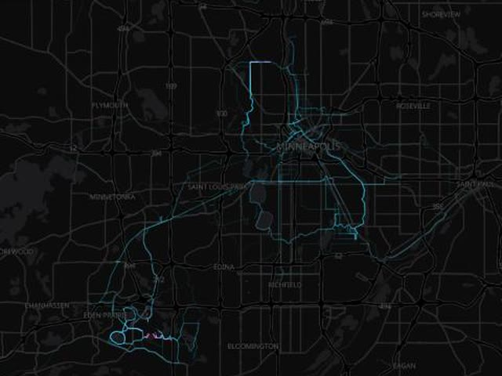

❯ cat README.md
___ _ ____ _ _ / _ \ _ _(_)_ __ _ __ / ___| |__ _ __ ___ ___| |_ | | | | | | | | '_ \| '_ \ | | | '_ \| '__/ _ / __| __| | |_| | |_| | | | | | | | || |___| | | | | | __\__ \ |_ \__\_\\__,_|_|_| |_|_| |_| \____|_| |_|_| \___|___/\__|
Software developer in Minneapolis, MN. I build side projects for fun: games, tools that live in the terminal, little sites for my photos and bike rides, and lately a voice assistant named Leo.
❯ ls projects/ --featured
hey-leo/ ● wip
Voice assistant powered by Claude. Haiku routes each question to the right model.

quinn-in-motion/ ●
Every Strava ride and walk on one heat map.

photos/ ●
A gallery of photos I've taken and like.
❯ ls -l projects/
| name | stack | about | links |
|---|---|---|---|
| reborndle | svelte | Guess the Pokémon Reborn trainer | live |
| yuyudle | sveltekit | Daily Yu Yu Hakusho guessing game | live src |
| snake | pixijs | Snake in JavaScript | live src |
| blackjack | react | Learn to play by the book | live src |
| to-go | go, bubble tea | To-do list with a full terminal UI | src |
| quinnchrest.dev | sveltekit | You are here | src |
❯ git log --oneline devlog/
a9f3c21 2026-11-12Meet Hey Leo (update)
A voice assistant for my computer, like "Hey Google" but powered by Claude.
A voice assistant for my computer, like "Hey Google" but powered by Claude.
7c10b4e 2026-09-28New site: activities.quinnchrest.dev (feature)
149 activities going back to 2020 on one map.
149 activities going back to 2020 on one map.
33de8a0 2026-09-27New site: photos.quinnchrest.dev (feature)
Launched with the first 15 photos.
Launched with the first 15 photos.
e81f6d9 2026-09-27Moving to GitHub Pages + SEO cleanup (update)
No more self-hosted server or Postgres. Fully static now.
No more self-hosted server or Postgres. Fully static now.
0b2a7f5 2025-07-17PostgreSQL backups (feature)
❯ gh api users/QuinnChrest
public_repos24
stars12
followers8
forks3
❯